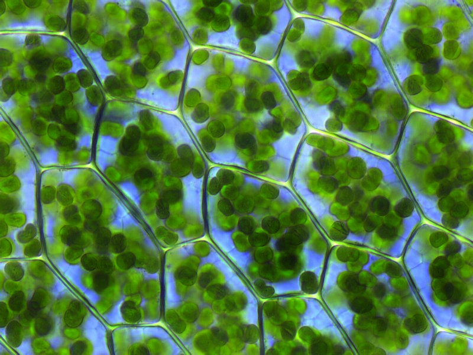

Botany, Plant Physiology & Ecosystem Dynamics
Comprehensive synthesis of plant classification (Thallophyta to Angiosperms), xylem/phloem transport, photosynthesis biochemistry, plant hormones (Auxins, Ethylene, ABA), Lindeman's 10% ecological energy transfer, and inverted marine biomass pyramids.

Classification of the Plant Kingdom
From non-vascular Cryptogams to seed-bearing Angiosperms
Undifferentiated plant body (thallus); lack true roots, stems, leaves, and vascular tissue. Includes green (Chlorophyceae), brown (Phaeophyceae - Kelps), and red algae (Rhodophyceae - Agar-agar).
Called the "Amphibians of the Plant Kingdom" because they inhabit moist soils but require water for flagellated antherozoid fertilization. Non-vascular (lack xylem/phloem).
First terrestrial plants to evolve vascular tissues (Xylem & Phloem). Body differentiated into true roots, stem, and leaves (fronds). Reproduce via spores, seedless.
Seed-bearing plants divided into:
• Gymnosperms: Naked seeds, non-flowering (Cycas, Pinus, Ginkgo).
• Angiosperms: Enclosed seeds inside fruit (Monocots like wheat vs Dicots like pea).
Plant Morphology, Fruits & Vascular Tissues
Specialized root/stem modifications, true vs false fruits, and vascular transport
Root & Stem Modifications
- Pneumatophores: Specialized respiratory roots in halophytic mangroves (Rhizophora) that project upward out of water/mud to breathe.
- Prop Roots: Aerial pillar-like roots providing mechanical support (Banyan tree).
- Rhizome: Fleshy underground horizontal stem (Ginger, Turmeric).
- Tuber: Swollen underground stem with vegetative eye buds (Potato).
- Bulb: Highly condensed stem surrounded by fleshy scale leaves (Onion, Garlic).
Fruits: True vs False (Pseudocarps)
Classic exam examples: Apple, Pear, Strawberry, Cashew nut.
Vascular Tissues: Xylem vs Phloem
Unidirectional upward transport from root hairs to foliage driven by transpiration pull. Composed of Tracheids, Vessels, Xylem Fibres (dead), and Xylem Parenchyma (living).
Bidirectional translocation of soluble sucrose from photosynthetic source leaves to metabolic sinks (roots, buds, seeds). Composed of Sieve Tubes, Companion Cells, Phloem Fibres, and Phloem Parenchyma.
Photosynthesis Biochemistry & Plant Hormones
Photolysis of water, chlorophyll magnesium, and physiological regulation
Photosynthesis: Light & Dark Reactions
- Origin of Oxygen: O₂ released originates entirely from the Photolysis of Water (H₂O), NOT carbon dioxide.
- Central Mineral: The chlorophyll pigment contains a Magnesium (Mg²⁺) ion in its central porphyrin ring.
- Action Spectrum: Photosynthetic rate is highest in Red light, second highest in Blue light, and negligible/zero in Green light.
- Light vs Dark Reaction: Light reaction occurs in the Grana of chloroplasts (synthesizes ATP & NADPH); Dark reaction (Calvin cycle) occurs in the Stroma (fixes CO₂ into glucose).
Major Plant Hormones (Phytohormones)
Ecosystem Structure, Pyramids & Lindeman's 10% Law
Trophic energy attenuation, upright vs inverted biomass pyramids
Lindeman's 10% Law (1942)
Formulated by Raymond Lindeman: During the transfer of organic energy from one trophic level to the next, only ~10% of energy is stored as biomass; approximately 90% is lost as metabolic heat, respiration, and excretion.
This energetic constraint restricts food chains to 4 or 5 trophic levels.
Pyramids of Energy & Numbers
- Pyramid of Energy: ALWAYS UPRIGHT in all ecosystems without exception, governed by the Second Law of Thermodynamics.
- Pyramid of Numbers:
- Upright in grassland / cropland ecosystems.
- Inverted in a single tree ecosystem: 1 large producer tree supports numerous herbivorous birds, which host thousands of parasitic insects.
Pyramid of Biomass
Strictly Upright. Heavy biomass of trees and grasses outweighs primary and secondary consumers.
INVERTED! Phytoplankton have tiny standing biomass but rapid turnover, while consumer fish are large and live for years.
Environmental Toxicology & Global Ecological Treaties
Bioaccumulation, biomagnification, eutrophication, and the ozone shield
Biomagnification
The progressive increase in concentration of persistent, fat-soluble, non-biodegradable toxins at each successive trophic tier of a food chain.
- DDT in Birds: Causes thinning of eggshells and premature breakage, crashing raptor populations.
- Methylmercury: Bioaccumulates in fish; responsible for Minamata Disease in Japan.
- Cadmium: Causes Itai-Itai Disease (severe bone and joint softening).
Eutrophication
Accelerated aging of water bodies caused by nutrient enrichment (agricultural runoff containing Nitrogen and Phosphorus).
- Triggers explosive Algal Blooms on water surface.
- Decomposers consume dissolved oxygen (DO) to break down dead algae.
- Biological Oxygen Demand (BOD) spikes sharply; Dissolved Oxygen (DO) crashes, causing massive fish mortality.
Stratospheric Ozone Shield
Ozone (O₃) layer concentrated in the Stratosphere (20–30 km) absorbs harmful ultraviolet UV-B and UV-C rays.
- Thickness measured in Dobson Units (DU) (1 DU = 0.01 mm of pure ozone at STP).
- Depleted by anthropogenic Chlorofluorocarbons (CFCs), halons, and carbon tetrachloride.
- Protected internationally by the landmark Montreal Protocol (1987).
Active Recall Flashcards
Interactive 3D flip cards covering plant physiology, hormones, and ecological concepts
High-Yield Prelims Exam Simulator
Five standard multiple-choice questions on water photolysis, ethylene gas, aquatic biomass pyramid, and false fruits